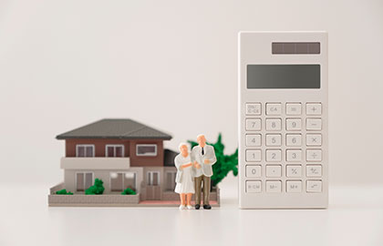
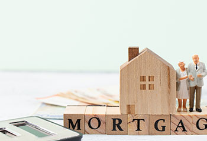
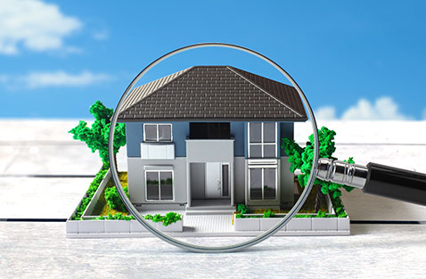
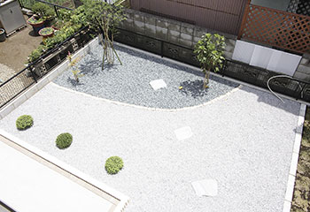
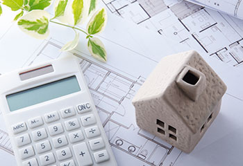
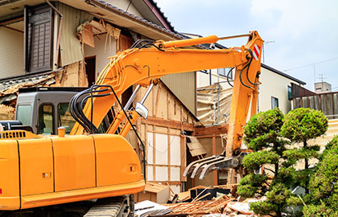

- トップ
- その他メニュー
ひかり不動産の不動産売却メニュー
不動産を売却するとき、お客様それぞれで抱えているお悩みや問題は全く異なります。だからこそ、それぞれのご事情・ご要望にあった最適な方法をご提案することが当社の使命であると考えています。ローン問題、離婚、リースバック、オーナーチェンジ、リフォーム、ホームインスペクション、解体・測量などお客様のご事情・ご要望をじっくりと伺い、最適なご提案をいたします。
ここではさまざまなケースにおけるその他の売却メニューについて解説いたします。
ローンの返済でお困りなら任意売却
任意売却とは、何らかの理由で住宅ローンの返済ができなくなり、さらに住宅を売却したとしてもローンが残ってしまう場合に行う不動産売却方法です。住宅ローンの返済が厳しく滞納が続く場合、住宅を売却してローンを完済するのがひとつの手段となります。しかし、売却代金だけでは住宅ローンの残債を完済できない場合もあります。別途返済用の資金があればいいのですが、それもない場合は不動産売却を行えません。
ローンが滞納され続けると金融機関などの債権者は抵当権を行使して残債を回収するために担保となる不動産（住宅）を競売にて強制的に売却する手続きを進めてしまうのです。この競売を避け、債権者と交渉して合意を得た上で自分の意思でなるべく高く売り、残債をより多く減らせる方法を任意売却といいます。
競売が行われると売却後も苦しい状況に
競売は所有者の同意なしに売却されるものです。裁判所によって執り行われ、オークション形式で購入者を決めます。競売は自分の意思で売却できないことはもちろん、通常の売却や任意売却よりも低い価格で売却される傾向にあります。つまり、大切なマイホームを売ったにも関わらず、ローンはほとんど返せないのです
しかも、売却代金はすべて残債の回収に充てられて当面の生活資金に回せません。売却後のローン残債も一括返済を迫られるため苦しい状況に追い込まれてしまうことでしょう。物件の引渡し時期についても所有者の希望はほぼ通らず、強制的に退去することになります。
競売は物件所有者様にとってデメリットばかりであり、生活再建も難しくなるものです。できることならば任意売却を行って、競売を回避しましょう。
任意売却を行った場合のメリット・デメリットについて
- メリット
-
- 相場に近い価格で売却できるため、競売より高く売却しやすい
- 高く売却しやすいため競売より多くローンを返済でき、残債を減らせる
- 近所や知人に知られずに売却できる
- 仲介手数料の支払い等、売却時に必要な費用や税金がかからない
- 残債の分割返済について債権者と交渉できる
- 親戚などに売却すれば今の家に住み続けることも可能
- 引越し費用を最高30万円まで融通してもらえる可能性がある（要債権者との交渉）
- 自分の意思で不動産売却できる
- デメリット
-
- 任意売却をするには滞納3カ月以上であることが条件であるため信用情報機関に掲載される可能性がある（ブラックリスト入りする）
- 連帯保証人から同意がないと任意売却を行えない（連帯保証人に知られてしまう）
- 売買価格が低すぎると債権者との交渉が決裂する可能性がある
- 任意売却は法律の知識も必要になるため、実績・経験のある不動産会社に依頼する必要がある
このように、任意売却はメリットが多い債務整理・売却方法です。ただし、デメリットも少なからずあるためそれを理解した上で行うようにしましょう。
将来を考えて自己破産もご検討ください
任意売却は競売と比べて多くローンを返せるとはいえ、それでも残債が多く残るケースも少なくありません。
任意売却後は債権者と残債務の返済について話し合いをする場合、最終的に月に1～5万円程度の返済になることがほとんどです。たとえば残債務が300万円で月に1万円ずつ返すとするならば、25年もの月日をかけて返済することになります。これは債務者にとっても精神的に重荷となりますし、債権者としてもメリットはありません。
もちろん頑張って返していくという気持ちも大切ですが、債務者・債権者お互いがスッキリして前を向くために「自己破産」という債務整理も考えてみてはいかがでしょうか。
自己破産を申し立て認められれば債務は免責となります。金銭的にも精神的にも余裕が生まれるため生活再建をしやすくなるでしょう。もちろん、自己破産は法律に則った債務整理の方法であり、給料を突然差し押さえられたり債権者から脅されたりといったことはありません。
当社では弁護士を始めとした地元の士業グループと強く連携しています。任意売却や自己破産など法律知識が必要な問題についても、当社が窓口となりワンストップで問題解決までサポートいたします。住宅ローンの返済でお困りでしたら、ぜひひかり不動産へご相談ください。
離婚時の不動産売却でお困りなら

離婚時に問題となりやすいのが不動産をどう財産分与するかについてです。たとえば、住宅ローンの有無は問題になりやすいポイントです。ローンが完済されているのであれば不動産売却を行って現金で分けるなどスムーズに進むことでしょう。しかしローンが残っていて売却しても完済しきれない（オーバーローン）といったケースでは分割が進みにくくなります。
また、お子様がいらっしゃって養育費とともにローンを支払い続けるというケースもあるかもしれません。この場合、いずれどちらかの支払い厳しくなり返済が滞る可能性がでてきます。ご夫婦で共有名義となっているケースも多いことでしょう。この場合お互いの合意がなければ売却できません。どちらかがマイホームを譲り受けると決まったケースでは、名義変更が必要であるものの金融機関が名義変更に応じてくれるかどうかは未知数となります。
このように、離婚時の不動産の取り扱いについては、ケースによりさまざまな問題が起こり得ます。ローンの返済、名義変更、財産分与、離婚時における不動産の扱いにお困りでしたらぜひ当社までお問い合わせください。
離婚時の不動産問題をケース別に解説
離婚時に、共有財産である不動産をどのように取り扱うべきか夫婦で取り決めなくてはいけません。実際にどのような方法が最適となるかは状況によって全く異なります。
ここでは3つのケースについて解説します。
CASE01：夫単独名義で妻が家に住み続ける場合
住宅ローンの名義が夫のみであり妻がその家を譲り受けた場合。妻には債務がないためお金に関しては特に気にすることはありません
ただし、ローンの名義がそのままの状態で万が一、夫が支払いを滞納してしまった場合は問題になります。このケースでは夫がローンを滞納し続けると住宅が競売にかけられて強制的に売却される可能性があります。そうなると、せっかく譲り受けたのに、妻は家を出ていかなければならなくなるでしょう。
では家の名義を妻に変更すれば良いのでは、と考えるかもしれません。しかし金融機関としては債務者ではない妻への名義変更を許可することはほぼありません。このようなケースの場合、まずは夫がしっかりとローンを完済することが大切です。そして完済後に正式に妻に名義変更するということを離婚時の取り決めとするようにしましょう。
CASE02：夫が名義人で妻が連帯保証人になっている場合
物件購入時に夫婦共働きで夫の方が収入は多いため夫が名義人・妻が連帯保証人という形でローンを組むケースもあります。この場合、離婚後に妻が家を出ているとしても夫が支払いを滞らせれば、妻に請求が届きます。というのも、連帯債務は離婚して家に住んでいなかったとしても解除できないためです。離婚と同時に連帯保証人から抜けたいところですが、一般的に金融機関が認めることはありません。
もし離婚を機に連帯保証人から外れたいのであれば、夫側で別の連帯保証人を立て、金融機関に申請し認められる必要があります。
CASE03：夫と妻で共有名義にしている場合
物件を購入する場合、夫婦で共有名義にすることで収入を合算してより大きなローンを組むケースも少なくありません。この場合、家の持ち分については返済割合によって決まります。ただし離婚後も一緒に住むということにはほぼなりませんので、売却する形になることでしょう。しかし、共有名義の場合は名義人全員が売却に同意しなければ売れません。もし夫の返済が滞った場合は妻にまとめて請求がきてしまいます。
このように、共有名義の物件は離婚時の不動産売却でスムーズに進みにくいことも少なくありません。アンダーローンであれば売却して現金を分割、オーバーローンであれば任意売却してしまってスッキリするなど、早い段階で行動することをおすすめします。
プライバシーへの配慮
離婚に伴った不動産売却は噂を立てられるのも面倒ですしご近所や知人にはなるべく知られずに進めたいとお考えになる方がとても多いです。精神的にできる限り穏やかに、なるべくスムーズに問題解決することは離婚時の不動産売却では大切です。
ひかり不動産では離婚時の不動産売却において、お客様のプライバシーをお守りするように細心の注意を払ってお客様の心に寄り添いつつ売却を進めます。広告を控えることはもちろん、相談時も対面を避けて電話やメールでお話を伺うといったことも対応可能です。離婚時の不動産売却でお悩みでしたら、まずは一度当社にお問い合わせください。お力になれるように全力を尽くします。
提携司法書士のご紹介
離婚時の不動産売却は行う手続きも多く、個人で進めるには何かと手間がかかるものです。ひかり不動産は古河市の「司法書士松本事務所」と提携している不動産会社です。当社が窓口となり「不動産名義変更、年金分割、公正証書作成補助」といったサービスをワンストップでリーズナブルにご提供いたします。
もちろん、不動産のプロとしてじっくりお話を伺いお客様の心に寄り添って最適な形の売却方法をご提案いたします。離婚に伴う不動産の売却や財産分与でお困りでしたら、ぜひひかり不動産までお問い合わせください。
売却後も住み続けるならリースバック

リースバックなら、現在お住まいのマイホームを売却した後もそのまま住み続けられます。「売却でまとまった現金を手に入れつつ、住み慣れた我が家で暮ら続けたい」という方におすすめです。
リースバックの仕組みはそこまで難しくありません。まず不動産会社がお客様のご自宅を買い取ります。それと同時に、お客様と買い手側が賃貸契約を結びます。その後は家賃をお支払い続けていただくことで、そのまま住み慣れた家にすみ続けられるという形です。売却代金は一括で支払われるためまとまった資金を調達でき、将来的には売却したご自宅を再購入することも可能です。
リースバックのメリット・デメリット
リースバックには売却後も住み続けられることだけでなく、さまざまなメリット・デメリットがあります。いかにまとめましたのでご覧ください。
- メリット
-
- 代金は一括支払いされるためまとまった資金調達が可能
- 住み慣れた我が家に売却後も住み続けられる
- 固定資産税がかからなくなる
- 住み続けられるため引越しの費用や手間は不要
- 将来的に買い戻すこともできる
- 家賃は地域相場に合った価格となる
- 敷金・礼金など初期費用はほとんどかからない
- 引越し手続きや売却の手間がほとんどかからない
- デメリット
-
- 自宅の名義人は不動産会社になる
- 毎月の家賃が発生する
- 買い戻す場合は費用が割高になる
リースバックはデメリットもあるものの、メリットの多い売却方法です。今後の資産運用を考えた時に本当に理に叶っているのか？という部分はシビアに考える必要はありますが、「資金調達をしたい」「売却後も住み続けたい」といったご希望が実現できる売却方法である事も確かです。
リースバックはこんなケースに向いています
リースバックはどのような場合に活きる売却方法なのか、具体的なケースをご紹介していきます。
住み続けながら老後資金を得たい
高齢化社会が進む現代日本において、年金受給額が減っているのが問題になっています。「老後資金に不安がある…」という方も多いことでしょう。とはいえ、家を売却して引越しするとなると手間がかかりますし、住み慣れた家を手放すのは悲しいものです。そこで活きるのがリースバックです。売却によりまとまった現金を得て、それを老後資金に充て、住み続けながら余生を安心して過ごせます。
売却を検討しているが子供を転校させたくない
ローンの支払が厳しいまたは、何らかの理由でまとまった現金が必要となり、売却を検討しているご家庭もあるのではないでしょうか。しかし売却後は引越ししなければならず、お子さんがいる場合は転校させなければなりません。
そこで活きるのがリースバックです。家賃を支払うことで家に住み続けられ、売却代金でローンの返済や資金調達を行えます。他にも、事業資金の調達・急病や事故により発生した医療費の支払い・資産整理などさまざまなケースでリースバックは活きてきます。愛着あるマイホームに住み続けながらお金の問題を解決する、ぜひリースバックをご活用ください。
リースバックとリバースモーゲージの違い

リバースモーゲージとは自宅を担保にして借り入れし、その後も住み続けられる方法です。現金を得た後も住み続けられるという点ではリースバックと似ていますが、リバースモーゲージは売却ではなく借り入れによる資金調達方法となります。
まず押さえておきたいことは、リースバックは不動産取引であり、リバースモーゲージは融資であるということです。この違いにより所有権移転のタイミングや資金の受け取りが異なってきます。
リースバックは現在お住まいの不動産を売却するため、所有権は売却時に不動産会社に移転します。一方リバースモーゲージは所有者が亡くなったタイミングで融資した金融機関へ移転します。
また、リースバックは売却後にその代金を一括で受け取れます。リバースモーゲージは自宅が担保となって年金のような形で一定額の融資を受け取ります。そして所有者が亡くなった後に担保の自宅を売却し借入金を返済する形です。
このように、リースバックとリバースモーゲージではさまざまな点で違いがあります。どちらが良いかは状況によりますが、将来的な返済がなく一括で資金を受け取れることを考えるとリースバックの方がメリットは大きいと言えそうです。
入居者がいる状態で投資物件を売却するオーナーチェンジ
オーナーチェンジとは入居者がいる状態で投資物件を売却する方法です
売却時には所有権や賃貸借契約等のオーナーが持つ権利を売主様から買主様へ移転されます。入居者様については特に何も変わらず生活し続けられます。オーナーチェンジは売主様買主様双方にメリットのある売却方法であり、不動産投資界隈では注目されている方法です。
オーナーチェンジのメリット
- 売主様側のメリット
-
- 入居者様に退去をお願いする必要がない
- 立ち退き料が発生しない
- 不動産投資家に注目されやすく売却しやすい
- 買主様側のメリット
-
- 物件購入後にすぐ収入を得られる
- すでに入居者様がいるため利回りを想定しやすい
- 購入直後にリフォーム等の初期費用が発生しない
- ローンの審査が通りやすい
このようにオーナーチェンジは双方にメリットがあります。
オーナーチェンジのデメリット
- オーナーチェンジのデメリット
-
- 内覧ができないため部屋の現況がわかりにくく購入になかなか至らない場合がある
- 物件の状況によっては契約不適合責任を負うリスクがある
- 売却中に入居者が退去してしまう可能性がある
このように、オーナーチェンジには入居者様がいることによって起こるデメリットがあります。特に内覧ができず売却前に物件のチェックもできないため、契約不適合責任を負う可能性があるのは不安を感じてしまうかもしれません。
オーナーチェンジで優良とされる物件の条件
オーナーチェンジ物件はその状況によって優良と判断されて売却しやすい場合があります。たとえば以下のような物件が良いとされています。
-
築年数25年以内
築25年以内の物件であれば家賃の下落リスクも低い傾向にあります。購入後も安定して収入を得やすいため良い物件と判断されやすいです。
-
設備が充実している
オートロックや宅配ボックスなど、生活を豊かにする設備がある物件も人気です。充実した設備は安定した家賃につながるため投資家目線で優良に映ることでしょう。
-
立地が良い
立地の良い物件は空室リスクが少なく、埋まりやすいため人気があります。特に駅から10分以内の物件は投資物件として評価されやすく、ローン審査も下りやすいため購入ハードルも下がる傾向にあります。
オーナーチェンジ物件を売却するコツと注意点
オーナーチェンジ物件をスムーズに売却するコツと注意点をまとめましたのでご覧ください。
スムーズな売却を行うためのコツ
-
オーナーチェンジ売却の実績ある会社を選ぶ
オーナーチェンジは通常の売却とは異なり売り方にも工夫がいります。そのため、依頼する不動産会社は投資物件取引についての知識・経験豊富なところを選ぶようにしましょう。
-
売り時を逃さない
投資用物件は景気の影響を強く受けます。株式相場や金利変動、そのた社会情勢などをチェックし売り時を逃さないことが大切です。難しい場合は不動産会社の担当者に相談し、よいタイミングを見つけ出していきましょう。
売却時の注意点
-
家賃を安易に下げない
投資用物件はその収益性が重視されます。そのため周辺相場より家賃が低い物件はオーナーチェンジとして売却しにくい傾向にあるので注意しましょう。
-
広すぎる物件は向かない
一般的に投資物件はファミリータイプだと売りにくい傾向にあります。ワンルームと比べて利回りが劣りやすいためです。もし広い物件であるならば空室にしてからの方がスムーズに進みやすいでしょう。
-
賃貸管理会社と契約している場合は注意
管理会社と契約している場合は売却時に解約しなければなりません。契約満了と同時に売却できれば特に何もありませんが、途中解約となると違約金が発生する可能性があるため、事前に確認しておくことをおすすすめします。
リフォームをお考えなら
不動産のリフォームをする理由にはさまざまなものがあります。ひかり不動産でリフォームを提示する場合は以下のような2つのケースです。
①売却前にリフォームして不動産価値を上げたい
②単純に今住んでいる家を綺麗にしたい
それぞれについてわかりやすく解説いたします。
①売却前にリフォームして不動産価値を上げたい場合

不動産売却でお客様がリフォームを検討されるケースは少なくありません。築年数が古いため、修繕が必要であるため、なるべく高く売りたいため、など理由もさまざまです。
売却前にリフォームする場合、その費用を差し引いて売却後にいくら手元に残るのかを事前に把握することが大切です。
また、「購入後に自身の好みでリフォームしたい」というニーズもあります。中には「古家の雰囲気を楽しみたい」という買主様がいらっしゃるのも事実です。
このように必ずしも売却前にリフォームするのが良いというわけではありません。お客様自身のお考えや目的はもちろん、地域のニーズに合わせて、売却戦略を練る事が肝要です。
売却前のリフォームについてお悩みでしたら、福津・宗像・古賀の地域ニーズを知り尽くした当社にご相談ください。
②いま住んでいる家を綺麗にしたい
前提として、不動産は年月とともにその価値が目減りしていく資産です。事実、不動産は生き物のようなもので、人間と同じくメンテナンスや治療が必要になる時もあります。
また、時代の流れとともに生活様式は変化しますし、暮らす方の意識も変わってきます。そのため「より暮らしやすい家にしたい」とお考えになることもあるのではないでしょうか。ひかり不動産では「いま住んでいる家を綺麗にしたい」「快適な暮らしを手に入れたい」といったお客様のご要望に喜んでご対応させていただきます。不動産売買に絡まないリフォームでもぜひお気軽にご相談ください。
リクシル不動産のサポートで充実のリフォームサービスをご提供！

ひかり不動産は大手リクシル不動産に加入する不動産会社であり、そのサポートを受けることでクオリティーの高いリフォームがお客様に提供可能です。キッチンを使いやすくしたい、お庭を大きくしたい、そこにドッグランを設置したいなど、お客様のご希望をぜひお聞かせください。大手ならではの高い対応力やアフターフォローにより、お客様の夢実現を当社がサポートいたします。
リフォームを絡めた提案をして売却をスムーズに

不動産売買はお客様のご事情・ご要望によってさまざまな方法がございます。例えば、「中古物件の購入と同時にリフォームをしたいが資金が足りない」といった方にはリフォーム費用をローンに組み込む事といったご提案が可能です。当社では買主様のニーズに合わせ、最適なご提案をいくつもご用意できます。その結果、売主様の大切な資産をよりスムーズに売却できるのが強みです。
住宅の健康診断―ホームインスペクションで売却を有利に進めましょう
ホームインスペクショとは住宅の専門家が、国の定めた基準に従って住宅診断を行い依頼者にアドバイスをするものです。いわば住宅の健康診断、それがホームインスペクションとなります。ホームインスペクションは「既存住宅状況調査技術者講習」を修了した建築士によって行われます。調査基準は「既存住宅状況調査方法基準」という国の定めに従って行うため信頼性の高さが特徴です。
ホームインスペクションを行うことで住宅の状態がわかります。売却前に行う場合、欠陥がわかれば修繕する、もしくは買主様に欠陥の有無を報告するといった選択を行えます。その結果、売却後の契約不適合責任のリスクを回避できたり、買主様の信頼を得られたりといったメリットがあります。そういった意味では、事前のホームインスペクションは売却を有利に進めやすくなるものであるといえるでしょう。
ホームインスペクションのメリット・デメリット
ホームインスペクションのメリット
売却前にホームインスペクションを行うメリットは、不動産売却をスムーズかつ安全に進めやすくなることです。不動産売却において大きなリスクとなるのが「契約不適合責任」です。売却後に売主様も知らなかった何らかの欠陥が見つかった場合、その修繕費用を売主様が支払わなければなりません。最悪の場合、売買契約破棄となる可能性もありえます。ホームインスペクションを行えばそのようなリスクを事前に回避できることでしょう。
また、ホームインスペクションを行っていれば、その旨を不動産情報に掲載することが可能です。買主様からすれば、「事前に検査された物件ならば安心」と判断でき、興味を持ってくれることでしょう。その結果、売却もスムーズに進む可能性が高まります。
ホームインスペクションのデメリット
ホームインスペクションは実施のために費用と時間が必要になる点がデメリットとなるかもしれません。ホームインスペクションの相場は5万円前後であり、オプションによりさらに詳しく調査できます。また、修繕が必要となればその修理費用も必要です。
また、ホームインスペクションは依頼から実施までに1週間前後かかり、実施から結果報告までにさらに1週間はかかります。つまり最低でも2週間は必要となるわけです。作業時間については、当日1～3時間程度で物件の規模によります。立ち会いが必要になるため事前に予定を合わせてなくてはいけません。
このように、ホームインスペクションには費用と手間がかかります。しかし、これらはデメリットというよりも、不動産売却をスムーズに行うための必要経費と考えることもできるのではないでしょうか。また、契約不適合責任のリスクを回避できることを考えれば、メリットのほうが強いと考えられます。
ホームインスペクションを行うための条件
ホームインスペクションを行うためには以下の条件にあった物件である必要があります。
- 築年数2年以上の住宅
- 居住歴のある中古住宅
- 中古（築年数2年以上）の一戸建て、アパート、マンション
ホームインスペクションとは日本語で「既存住宅状況調査」です。既存住宅＝中古物件の状況を調査するものであり、新築で誰も住んだことのない物件は調査対象とはならないわけです。
ホームインスペクションの調査項目について
ホームインスペクションでは戸建て住宅とマンションで調査項目に若干の違いがあります。以下にまとめましたのでご覧ください。
※表は左右にスクロールして確認することができます。
| 構造耐力上主要な部分 | 雨水の侵入を防止する部分 | |
|---|---|---|
| 戸建て住宅の調査項目 | 基礎、土台、床版、柱、横架材、壁、斜材、屋根版、小屋組 | 基礎杭、基礎、床版、壁、外壁、屋根版外壁、開口部、屋根 |
| マンションの調査項目 | 基礎杭、基礎、床版、壁、外壁、屋根版 | 外壁、開口部、屋根、配水管 |
このように、住宅の構造部分について調査が行われます。倒壊することはないか、雨漏りやシロアリ被害はないか、外壁のほころびはないかなど、今後暮らしていく上で重要になる部分を調べるのがホームインスペクションです。ちなみに、キッチンやトイレなどといった設備についてはホームインスペクションの調査対象外となります。必要があれば売主様自身で調査を行っていただければと思います。
ホームインスペクションの費用と期間
ホームインスペクションにかかる費用
ホームインスペクションは5万円前後が相場で、戸建ての場合は延床面積によって1万円前後の差が出ます。また、給排水管路検査のオプションを付ける場合はプラスで5,000円程度必要です。
ホームインスペクションの期間
| 依頼から実施まで | 1週間程度 |
|---|---|
| 実施から報告書作成まで | 1週間程度 |
| 当日の作業時間 | 1～3時間程度（物件規模による） |
大まかには上記のようになりますが、地域によってはインスペクター（調査士）が不足している場合もあります。依頼から実施までに時間がかかる可能性があることも頭に入れておきましょう。,000円程度必要です。
解体や測量など

「不動産を売却したいが住宅が古すぎて売るに売れない…」とお悩みの方はぜひ当社にご相談ください。建物が古くて状態が悪い、そのような古家付き土地は売却が難しいことが珍しくありません。このようなケースでは住宅を解体し、土地として売り出すことでスムーズに売却できる可能性がございます。
ひかり不動産は地元の解体業者と業務提携しており、安心安全かつ適正価格での解体が可能です。また、土地を売却しようとしたものの、その境界が明確になっておらず売却を躊躇されている方もいらっしゃることでしょう。そのように売却前に測量が必要となるケースでもぜひ当社にご相談ください。ひかり不動産ならば測量会社とも業務提携しておりますのでスムーズにご案内できます。
売却前に解体・測量をご検討されているならば、地元業者と提携しワンストップでスムーズな対応ができるひかり不動産へお問い合わせください。
Pickup!ひかり不動産の強み
不動産売却はお客様ごとに状況が全く違います。ローン滞納、資金調達、投資物件、離婚、など法律を始めとした不動産以外の専門的な知識が必要となるケースも少なくありません。
当社は地元の各種士業（税理士・司法書士・行政書士・土地家屋調査士・弁護士・社会保険労務士）と強い結びつきがあります。不動産に関するさまざまな問題に対しても当社が窓口になって柔軟・スムーズ・ワンストップでご対応可能です。お客様が抱えるお悩みや問題を解決するお力になれる、これがひかり不動産最大の強みです。
不動産に関するお悩みごとでしたらどんなことでもお気軽にひかり不動産へご相談ください。お客様ファーストの精神でじっくりお話を伺い、問題解決・夢実現へ向けてプロとしての責任を持ってお客様と一緒に歩みます。
福津・宗像で不動産についてお困りでしたらぜひ一度当社にご来店くださいませ。